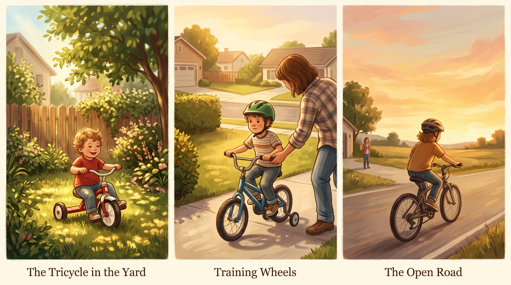
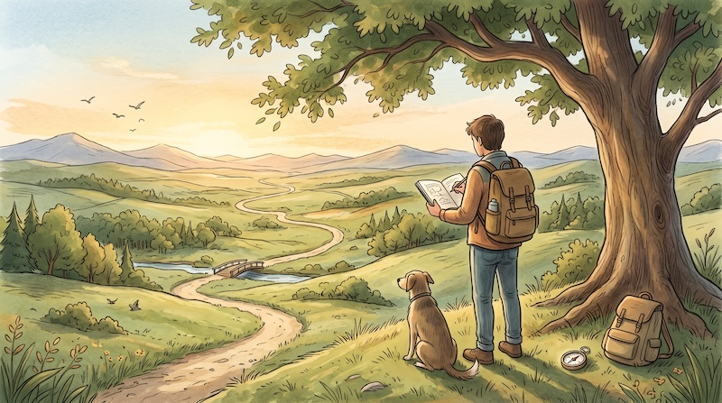

N-1 Experiments
Case Study
The Opportunity
I envision myself on a deserted island, looking out across the vastness of the blue ocean. The island represents current, bounded opportunities. One can live well enough, but the perimeter imposes subtle limits on every dimension of life.
The blue ocean represents unconstrained potential: the island is what is known or nearly exhausted, while the open water represents uncharted territory.
The Problem

Trying to navigate the blue ocean forced a re-examination of my life, formal training, and career to this point. In truth, confronting this scale of opportunity revealed I was still riding with training wheels.
The Current Approach
The vastness of the open water beckons, thrills, and intimidates in equal measure. The past two to three years have served as an intentional liminal phase—an extended period of preparation.
This is why I use N=1 Experimentation to describe this operational methodology. Rather than adopting an inherited blueprint, the process begins by re-evaluating baseline identity and isolating the underlying why.
Understanding the ground underfoot is the first requirement before venturing outward. Whether the crossing proves worthwhile is judged by the navigator alone, and the voyage will inevitably take longer than planned.
Take what works for you as this work unfolds. The beauty of a blue ocean is that every heading is viable. Even modest coastal voyages undertaken while maintaining a conventional career are entirely valid—including simply casting a line from the shore.
Areas of Interest

Self
Understanding Self
On this path and going forward, you set the direction and length of the journey.
Navigating the Waters
Sailing the Open Sea
Navigation signals, ocean swells, and weather. Using pattern recognition to read the signals, predict shifts, and navigate emerging conditions.
Map the Journey
Mapping the Paths
Recording your journey, sights, feelings, and findings. Building return routes and paving the way for other like-minded travelers.
The Approach
The methodology I developed integrates multiple domains:
- Multiple data sources — Don’t trust any single framework. Draw from many: analytics and intuition, conventional and unconventional, conscious and somatic.
- Pattern recognition — Look for convergence and resonance. When several independent signals point in the same direction, that overlap is meaning. Not proof—but signal worth investigating.
- Biomarkers — Your body knows before your mind does. Energy levels, time perception, emotions, physical sensations—all are data. That drained feeling despite success? That’s not a character flaw. That’s a system alert.
- Quantified self — Track your experiences. You cannot find a pattern in a dataset that doesn’t exist.
- AI and operational tooling — Read the weather, test assumptions against models, and chart clear passage toward your objectives.